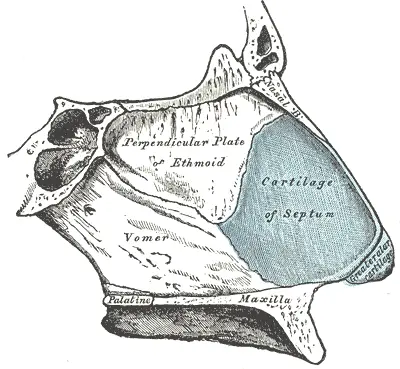
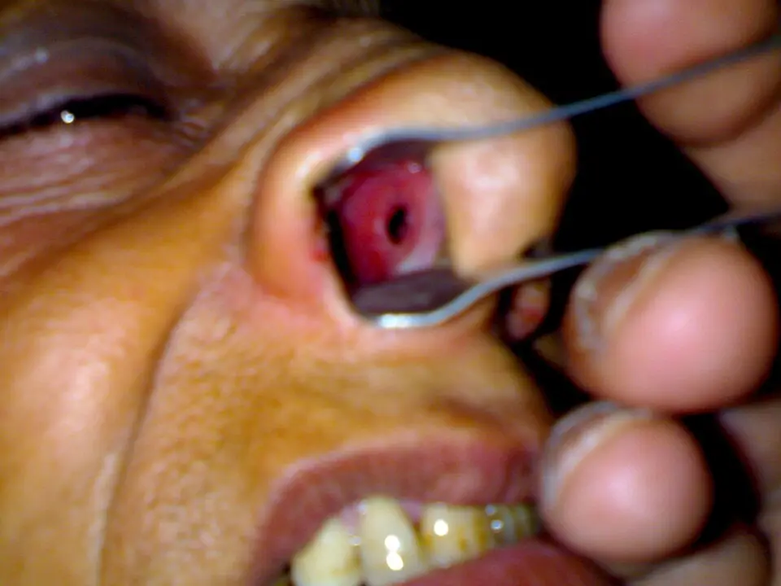
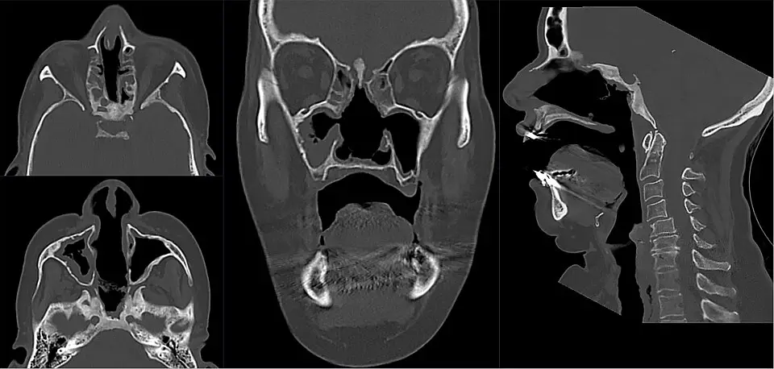

DX.5 — Perforation de la cloison nasale
Une perforation de la cloison saigne en petites quantités, se couvre de croûtes et siffle, mais elle n'est qu'un signe : sa cause décide du pronosticS8S12. Le médecin écarte d'abord une tumeur, une vasculite et une destruction par la cocaïne, puis il soigne la muqueuse avant d'envisager une fermetureS5S13.
1. Définition
La méta-analyse européenne de 2025 sur les grandes perforations définit la perforation septale comme un défaut transfixiant de la cloison qui fait communiquer les deux fosses nasalesS8. Ce défaut traverse trois couches : le mucopérichondre droit, le cartilage ou l'os, puis le mucopérichondre gaucheS8. L'équipe bâloise de 2024 précise que la perte touche le cartilage ou l'os avec leur revêtement, mucopérichondre en avant et mucopérioste en arrièreS2.
2. Épidémiologie (Suisse, puis Europe)
L'étude suédoise de Skövde a examiné 1387 adultes tirés au sort et trouvé une perforation chez 0,9 % d'entre eux (intervalle de confiance à 95 % : 0,5–1,6)S6. L'équipe de Bâle retient une prévalence d'environ 1 à 2 %, et la revue de Barcelone d'environ 1 %S2S7. La chirurgie septale antérieure reste la première cause ; dans les grandes perforations, l'origine iatrogène atteint 61,2 %S8. Les séries suisses et européennes détaillent les autres causes, et l'histoire naturelle explique pourquoi la lésion persiste.
Séries suisses et européennes
| Population | Donnée | Source |
|---|---|---|
| Skövde (Suède), 1387 adultes examinés à l'endoscope | La prévalence atteint 0,9 % ; les polypes nasaux multiplient le risque (rapport de cotes 11,5), contrairement à l'âge, au sexe, au diabète et au tabac. | S6 |
| Saint-Gall (Suisse), 54 réparations consécutives de 2011 à 2017 | La série chirurgicale classe les patients selon le diamètre mesuré pendant l'intervention. | S3 |
| Méta-analyse 2025, 408 grandes perforations | Les causes se répartissent ainsi : iatrogène 61,2 %, idiopathique 36,5 %, traumatique 31,4 %, toxique 28,4 % ; une même lésion peut cumuler plusieurs causes. | S8 |
| ENT UK, 2024 | Le traumatisme, manipulations digitales comprises, explique 39 % des perforations. | S12 |
| Homburg (Allemagne), 64 porteurs de bouton septal | Les causes comptent 42 septoplasties, 10 traumatismes, 7 granulomatoses avec polyangéite, 2 manipulations, 2 abus de gouttes et 1 cause inconnue. | S15 |
| Plus grande série de lésions destructrices induites par la cocaïne, 25 cas | Tous les patients présentent une perforation septale ; le palais est perforé dans 24 % des cas. | S5 |
| Méta-analyse 2024, 598 hématomes ou abcès septaux | Les hommes représentent 72,1 % des cas, l'âge moyen est de 21,6 ans, et 14,3 % gardent une déformation ou une perforation. | S14 |
Les chiffres chirurgicaux sélectionnent les perforations gênantes ; ils surestiment donc la part iatrogène par rapport à la population généraleS6S8.
Histoire naturelle
La Société suisse d'ORL indique que la plupart des perforations ne donnent aucun symptôme et sont découvertes par hasardS1. Une petite perforation siffle, alors qu'une très grande perforation produit des croûtes gênantesS1. La taille reste le facteur qui prédit le mieux l'échec d'une fermeture chirurgicale, d'où l'intérêt d'arrêter tôt la cause qui agrandit le défautS8.
Une lésion due à la cocaïne progresse tant que la consommation continue ; elle peut détruire les cornets, le palais et la paroi latérale du nezS5. Une perforation laissée par une septoplastie reste en revanche stable lorsque ses bords sont réguliers et sa muqueuse saineS12S13.
3. Physiopathologie
La cloison repose sur une charpente ostéocartilagineuse dont le cartilage reçoit son sang du mucopérichondre qui le recouvreS14. Tout ce qui décolle ou nécrose ce revêtement des deux côtés au même endroit prive donc le cartilage de sang et le fait disparaîtreS14. Le trou crée ensuite des turbulences qui assèchent ses bords et entretiennent croûtes et saignementsS2S8. La corrélation relie chaque mécanisme à l'examen qui le montre et au geste qui le corrige.
Base à connaître — la charpente de la cloison
La cloison sépare les deux fosses nasales ; en avant, elle repose sur le cartilage septal, en arrière et en haut sur la lame perpendiculaire de l'ethmoïde, en bas sur le vomer. Le cartilage ne possède pas de vaisseaux propres : il dépend du mucopérichondre, et un hématome qui le décolle provoque une ischémie puis une nécroseS14.
Charpente de la cloison nasale. La planche montre le septum de profil, vu depuis la fosse nasale droite, avec ses os et son cartilage.

Lisez d'abord seul ce cliché (charpente de la cloison nasale) : cherchez vous-même le signe.
La copie annotée (charpente de la cloison nasale) indique les repères décrits ci-dessous.
- Le cartilage septal constitue la partie antérieure et mobile de la cloison.
- La lame perpendiculaire de l’ethmoïde constitue la partie postéro-supérieure osseuse.
- Le vomer constitue la partie postéro-inférieure et rejoint le maxillaire.
- Le cartilage ne reçoit pas de vaisseaux propres : il vit du mucopérichondre qui le recouvre des deux côtés.
Ce que l'image décide. Une perforation due à un hématome, à une septoplastie ou à la cocaïne détruit d’abord la partie cartilagineuse antérieure.

La partie antérieure de la cloison porte la tache vasculaire de Kiesselbach, irriguée par des branches des carotides interne et externeS22. C'est pourquoi le bord antérieur d'une perforation saigne dès qu'une croûte s'arrache ; le schéma artériel figure dans DX.1.
L'air qui passe d'une fosse à l'autre par un orifice très étroit produit un sifflement, alors qu'un grand orifice ne siffle plus mais multiplie les croûtesS1.
Une lésion qui touche une seule face guérit souvent, car l'autre face continue de nourrir le cartilage ; la perforation exige une perte transfixiante des trois couchesS8S14.
Turbulences, croûtes et sifflement
La perforation crée une turbulence pathologique du flux d'air et réduit l'humidification normale de la muqueuseS2. Plus le défaut s'agrandit, plus le flux laminaire se désorganise, et plus la sensation d'obstruction augmenteS8. Le bord du trou s'assèche, se couvre de croûtes, puis saigne lorsque ces croûtes sont arrachéesS12S13.
Une perte étendue du support cartilagineux entraîne l'affaissement du dos du nez, c'est-à-dire une ensellureS13.
Corrélation : perturbation → exploration → thérapeutique
| Perturbation | Exploration qui la montre | Thérapeutique qui la corrige |
|---|---|---|
| Le sang décolle le mucopérichondre et coupe la nutrition du cartilage. | La rhinoscopie montre une tuméfaction septale bilatérale après un traumatisme. | Le drainage urgent évacue l'hématome avant la nécrose (S14 ; DX.3). |
| La cocaïne contracte les vaisseaux, ses cristaux blessent la muqueuse et une surinfection entretient l'inflammation. | L'endoscopie révèle une nécrose ; la toxicologie urinaire ou capillaire prouve la consommation. | L'arrêt de la consommation et le débridement local priment ; les glucocorticoïdes n'ont pas d'indication initialeS5. |
| Une vasculite granulomateuse détruit la muqueuse et le cartilage. | Les ANCA, l'atteinte rénale ou pulmonaire et la biopsie orientent. | Le traitement immunosuppresseur de la vasculite suit les recommandations EULARS11. |
| La turbulence assèche les bords et provoque croûtes et saignements. | La rhinoscopie montre des croûtes et des bords hémorragiques. | Les rinçages salins, les onguents et parfois un bouton septal corrigent ces symptômesS12S13. |
| La perte du support cartilagineux affaisse le nez. | L'inspection montre une ensellure. | L'orientation ORL urgente recherche une destruction activeS13. |
4. Démarche diagnostique
Dans la situation « épistaxis », le médecin traite d'abord les trois urgences de la liste : antithrombotique (E1), thrombopénie immune (E2) et cancer naso-sinusien (E3). Devant une perforation, il cherche ensuite une lésion évolutive : muqueuse ulcérée, douleur, adénopathie ou ensellure imposent un avis ORL urgentS13. Il distingue enfin quatre diagnostics discriminants, car un même trou peut traduire une séquelle stable ou une maladie qui progresseS5S12.
Diagnostics discriminants
| Diagnostic | Élément qui tranche | Piège | Conduite si positif |
|---|---|---|---|
| Tumeur, dont le lymphome NK/T nasal (lymphome à cellules tueuses naturelles et T) | Une ulcération qui grandit, saigne et fait mal ; la biopsie du bord trancheS5S12. | Un antécédent de septoplastie rassure à tort. | Le médecin adresse en urgence à l'ORL et suit DX.10S13. |
| Granulomatose avec polyangéite | Des ANCA de type PR3, une atteinte pulmonaire ou rénale et une biopsie granulomateuse oriententS10. | La biopsie nasale reste souvent non spécifiqueS5. | Le médecin cherche une atteinte d'organe et adresse au rhumatologue ou au néphrologueS12. |
| Lésion destructrice induite par la cocaïne | Une perforation du palais, une atteinte de la columelle et une toxicologie positive oriententS5. | Les ANCA sont souvent positifs et font conclure à tort à une vasculiteS5. | L'arrêt de la consommation passe avant tout traitement immunosuppresseurS5. |
| Séquelle iatrogène ou traumatique stable | Les bords sont réguliers, la muqueuse est saine et l'histoire est compatibleS12. | Le bord reste stable d'un contrôle à l'autre. | Le médecin soigne la muqueuse et adresse à l'ORL sans urgenceS13. |
L'erreur classique du débutant consiste à attribuer toute perforation à une ancienne septoplastieS12. Or une évolution inhabituelle impose de revoir la cause, car un cancer ou une vasculite peuvent toucher une cloison déjà opéréeS12S13. Inversement, conclure à une vasculite sur des ANCA positifs, sans toxicologie, expose à un traitement immunosuppresseur inutile chez un consommateur de cocaïneS5.
Les infections chroniques forment un cinquième groupe : mycobactéries, syphilis et mycoses se recherchent par sérologie, culture ou histologieS5.
5. Anamnèse ciblée et drapeaux rouges
L'entretien recherche d'abord ce qui a pu blesser la cloison : chirurgie, cautérisations, traumatisme, sonde, lunettes à oxygène, manipulations et poussières professionnellesS12. Il demande ensuite les substances appliquées dans le nez, car décongestionnants, corticoïdes et cocaïne lèsent la muqueuseS12. Chaque symptôme se caractérise, et les drapeaux rouges se cherchent jusqu'aux reins et aux poumonsS10.
Substances appliquées dans le nez
L'AIPS d'Otrivin Rhume limite la xylométazoline à une semaine, car un usage plus long provoque une rhinite médicamenteuseS20. La même AIPS la contre-indique en cas de rhinite sèche ou atrophique, ce qui concerne justement une muqueuse perforée et croûteuseS20.
L'AIPS d'Avamys indique que le furoate de fluticasone provoque fréquemment une ulcération nasale et très rarement une perforation du septumS21. La même AIPS fait pulvériser la narine gauche avec la main droite et inversement ; le médecin vérifie ce geste et la durée du traitementS21.
La cocaïne se demande sans jugement et avec confidentialité, car les patients la nient souvent, ce qui conduit à poser à tort un diagnostic de vasculiteS5. La question porte aussi sur la fréquence et la date de la dernière prise, qui guident le choix du test toxicologiqueS5.
Symptômes caractérisés
Dans les grandes perforations, la méta-analyse de 2025 relève une obstruction chez 62,0 %, des croûtes chez 49,9 %, des épistaxis chez 45,7 % et un sifflement chez 25,2 % des patientsS8.
| Symptôme | Caractères à préciser | Typique ou non, et pourquoi |
|---|---|---|
| Épistaxis | Le saignement est antérieur, de petit volume, récidivant, souvent déclenché par l'arrachage d'une croûteS13. | Il est typique, car le bord asséché du trou saigne ; un saignement abondant n'est pas typique et renvoie au tri de la Phase A. |
| Croûtes | Elles se forment sur le bord du trou et reviennent malgré le mouchage. | Elles sont typiques des grandes perforationsS1. |
| Sifflement | Il accompagne le passage de l'air par le nez. | Il est typique des très petits orificesS1. |
| Obstruction ressentie | Elle est bilatérale et ne correspond à aucun obstacle visible. | Elle est typique, car la turbulence remplace le flux laminaireS8. |
| Écoulement malodorant | Il est purulent et persistant. | Il suggère une surinfection, fréquente dans les lésions dues à la cocaïneS5S12. |
| Douleur nasale | Elle est continue et progressive. | Elle n'est pas typique d'une séquelle et doit faire suspecter une tumeur ou une inflammationS13. |
Drapeaux rouges
| Drapeau rouge | Signification | Action immédiate |
|---|---|---|
| Saignement abondant ou retentissement hémodynamique | Le saignement dépasse le cadre d'une perforation. | Le médecin applique le tri de la Phase A et cherche un antithrombotique (DX.2). |
| Muqueuse ulcérée ou d'aspect malsain | Elle fait suspecter une tumeur. | Le médecin adresse en urgence à l'ORLS13. |
| Ensellure nouvelle | Le support cartilagineux se détruit. | Le médecin adresse en urgence à l'ORLS13. |
| Douleur nasale ou adénopathie cervicale | Elles évoquent une tumeur maligne. | Le médecin organise une biopsie rapideS13. |
| Hémoptysie, hématurie ou baisse de l'audition | Elles évoquent une granulomatose avec polyangiévite systémiqueS10. | Le médecin demande créatinine, sédiment urinaire et un avis spécialisé rapideS12. |
| Nécrose du pavillon de l'oreille ou purpura rétiforme | Elles évoquent une vasculite induite par la cocaïne et le lévamisoleS5. | Le médecin fait une formule sanguine, à la recherche d'une neutropénieS5. |
| Tuméfaction septale après un choc | Elle signe un hématome septal. | Le médecin fait drainer en urgence (DX.3)S14. |
6. Examen physique ciblé, région par région
L'examen suit un ordre fixe : nez externe, fosses nasales à la lumière puis à l'endoscope, bouche, oreilles, cou et peauS5S12. Chaque temps répond à une question : la lésion est-elle stable, détruit-elle le support, ou annonce-t-elle une maladie générale ? Les fenêtres décrivent le nez externe, la rhinoscopie antérieure, l'endoscopie, la bouche, les oreilles, le cou et la peau.
Nez externe
Signe. Le médecin cherche une ensellure, c'est-à-dire un affaissement du dos du nez, ainsi qu'une lésion de la columelle ou de la lèvre supérieureS5S13.
Geste. Il regarde le profil, puis palpe doucement le dos du nez, de la racine à la pointe, en comparant avec une photographie antérieure si le patient en possède une.
Aspect. Normalement, le dos du nez reste rectiligne ; une ensellure nouvelle impose un avis ORL urgentS13. Une atteinte de la columelle ou de la lèvre oriente vers la cocaïne plutôt que vers une vasculiteS5.
Rhinoscopie antérieure
Signe. Le médecin décrit le siège, le diamètre, les bords, les croûtes et la couleur de la muqueuse autour du trouS12.
Geste. Il écarte la narine au spéculum, éclaire à la lampe frontale et ne détache pas les croûtes adhérentes, car leur arrachage fait saignerS13.
Aspect. Normalement, la cloison est continue et rose ; une perforation laisse voir la fosse opposée. Des bords lisses sur une muqueuse saine rendent la biopsie inutile selon ENT UK, alors qu'un bord irrégulier la justifieS12.
Grande perforation septale en rhinoscopie. La photographie montre une rhinoscopie antérieure au spéculum, narine droite écartée, chez un adulte.

Lisez d'abord seul ce cliché (grande perforation septale en rhinoscopie) : cherchez vous-même le signe.
La copie annotée (grande perforation septale en rhinoscopie) indique les repères décrits ci-dessous.
- Le trou sombre permet de voir la fosse nasale opposée à travers la cloison.
- La muqueuse du bord est rouge et congestive, sans bourgeon visible.
- Une croûte adhérente peut masquer le bord ; on ne l’arrache pas pour mieux voir.
Ce que l'image décide. Le médecin mesure le trou, décrit ses bords et adresse en urgence si le bord est irrégulier.

Endoscopie nasale
Signe. L'endoscope mesure la limite postérieure du trou et cherche une destruction des cornets ou de la paroi latéraleS5.
Geste. L'ORL introduit un endoscope dans chaque fosse et documente la lésion, car un suivi endoscopique répété montre son évolutionS4.
Aspect. Dans la plus grande série de lésions dues à la cocaïne, les cornets inférieurs étaient détruits dans 68 % des cas et la paroi latérale entière dans 20 %S5. Une nécrose avec croûtes épaisses et pus évoque une surinfection, le plus souvent à Staphylococcus aureusS5.
Bouche et palais
Signe. Le médecin cherche une perforation ou une ulcération du palais dur.
Geste. Il éclaire la voûte palatine, bouche grande ouverte et tête en extension.
Aspect. Le palais est perforé dans 24 % des lésions dues à la cocaïne, et cette atteinte compte parmi les signes d'alerte qui les distinguent d'une vasculiteS5.
Oreilles
Signe. Le médecin cherche une surdité de transmission ou de perception, ainsi qu'une nécrose du pavillon.
Geste. Il réalise les épreuves au diapason, puis il inspecte l'hélix des deux côtés.
Aspect. Une baisse de l'audition ajoute un point aux critères de granulomatose avec polyangéiteS10. Une nécrose de l'hélix est quasi pathognomonique d'une vasculite due à la cocaïne et au lévamisole, présente chez environ trois quarts des patientsS5.
Peau et membres
Signe. Le médecin cherche un purpura rétiforme, surtout aux membres inférieurs, et des nécroses cutanées.
Geste. Il examine le patient dévêtu, membres inférieurs compris, et note la taille et l'aspect des lésions.
Aspect. Un purpura rétiforme s'observe dans environ 80 % des vasculites dues à la cocaïne et au lévamisoleS5. Il impose une formule sanguine, car une neutropénie accompagne souvent cette vasculiteS5.
7. Approche syndromique
Quatre syndromes résument les présentations ; le tableau syndromique détaille leurs signes fonctionnels et physiquesS5S12S13. Le syndrome local croûteux est le plus fréquent et le plus bénin, tandis que les syndromes destructif, systémique et tumoral changent la conduite le jour même.
Tableau syndromique
| Syndrome | Signes fonctionnels | Signes physiques |
|---|---|---|
| Syndrome local croûteux | Croûtes, petites épistaxis, sifflement et obstruction ressentie sont présentsS8. | Le trou a des bords réguliers et une muqueuse saineS12. |
| Syndrome destructif centro-facial | Douleur faciale, croûtes, épistaxis et baisse de l'odorat s'installentS5. | Ensellure, perforation du palais et nécrose des cornets apparaissentS5. |
| Syndrome systémique vasculitique | Toux, hémoptysie, baisse de l'audition et altération de l'état général s'ajoutentS10. | Hématurie au sédiment, nodules pulmonaires et purpura se constatentS5S10. |
| Syndrome tumoral | Douleur progressive et saignement d'un ulcère qui ne guérit pas dominentS12. | Ulcération irrégulière et adénopathie cervicale se palpentS13. |
L'ensellure se définit comme l'affaissement du dos du nez par perte de son soutien cartilagineux ; elle se recherche de profil et traduit une destruction déjà avancéeS13.
8. Diagnostic positif et critères
Le diagnostic de perforation est anatomique : la rhinoscopie ou l'endoscopie montre une communication entre les deux fossesS7S8. La perforation se classe ensuite selon son plus grand diamètre : petite sous 0,5 cm, moyenne de 0,5 à 2 cm, grande au-delà de 2 cmS2. Il ne suffit pourtant pas, car la cause se démontre séparément ; aucune société ne fixe de critères propres à la perforationS5. Les critères ACR/EULAR 2022 (American College of Rheumatology / European Alliance of Associations for Rheumatology) servent à classer une vasculite, une fois les imitations excluesS10.
Critères de classification de la granulomatose avec polyangéite (ACR/EULAR 2022)
Ces critères ne s'appliquent qu'à un patient déjà diagnostiqué avec une vasculite des petits ou moyens vaisseaux, après exclusion des imitations comme la cocaïneS10. Un total d'au moins 5 points permet de classer la maladie en granulomatose avec polyangéiteS10.
| Critère | Points |
|---|---|
| Écoulement nasal sanglant, croûtes nasales ou congestion naso-sinusienne | +3 |
| Atteinte cartilagineuse | +2 |
| Surdité de transmission ou de perception | +1 |
| ANCA cytoplasmiques ou anti-protéinase 3 positifs | +5 |
| Nodules, masse ou cavité pulmonaire à l'imagerie | +2 |
| Granulome ou cellules géantes à la biopsie | +2 |
| Inflammation ou condensation des sinus à l'imagerie | +1 |
| Glomérulonéphrite pauci-immune | +1 |
| ANCA périnucléaires ou anti-myéloperoxydase positifs | −1 |
| Éosinophiles ≥ 1 × 10⁹/L | −4 |
Dans la cohorte de validation, ces critères atteignent une sensibilité de 93 % et une spécificité de 94 %S10. Un piège guette le débutant : une atteinte cartilagineuse, des croûtes et des ANCA anti-PR3 donnent déjà 10 points, alors qu'une cocaïne non avouée produit le même tableauS5S10.
Les signes qui orientent vers la cocaïne sont le jeune âge, l'échec d'un traitement immunosuppresseur puissant, des ANCA anti-élastase, une perforation du palais et l'absence d'atteinte systémiqueS5.
9. Examens complémentaires
9.a — L'examen de référence est clinique : l'endoscopie nasale confirme la perforation, la mesure et guide une éventuelle biopsieS4S12.
9.b — Hors séquelle évidente, la première intention associe une biologie ciblée et une toxicologie, car les causes graves se démasquent par le sang et l'urineS5S12.
9.c — Si l'urine est négative alors que le doute persiste, l'analyse des cheveux remplace le test urinaireS5.
9.d — En seconde intention viennent la biopsie et l'imagerie, guidées par l'aspect et les signes générauxS12.
Endoscopie nasale
Indication. L'endoscopie complète la rhinoscopie lorsque la limite postérieure du trou, les cornets ou la paroi latérale restent invisibles à la lampeS12.
Interprétation. Elle mesure le grand diamètre, qui classe la perforation en petite, moyenne ou grande et prédit le succès d'une fermetureS2S8. Elle recherche aussi une nécrose, une destruction des cornets et un bord irrégulier, signes d'une maladie activeS5S12.
Piège. Une mesure isolée ne suffit pas, car seule une série d'endoscopies montre si la lésion progresse ou reste stableS4.
Biologie ciblée
| Examen | Valeur ou résultat | Signification et conduite |
|---|---|---|
| Formule sanguine | Une neutropénie est anormale. | Elle oriente vers une vasculite due au lévamisole et contre une vasculite primaireS5. |
| ANCA par immunofluorescence et par ELISA (dosage immuno-enzymatique) | Un aspect cytoplasmique ou des anti-PR3 comptent +5 ; un aspect périnucléaire ou des anti-MPO comptent −1. | Le résultat s'interprète avec la clinique et la toxicologieS5S10. |
| ANCA anti-élastase | Ils sont présents dans jusqu'à 84 % des lésions dues à la cocaïne. | Ils orientent vers la cocaïne plutôt que vers une granulomatoseS5. |
| Créatinine et sédiment urinaire | Une hématurie ou une créatinine élevée signalent une atteinte rénale. | Le médecin adresse rapidement au néphrologueS12S11. |
| Sérologie de la syphilis et recherche de mycobactéries | Un résultat positif désigne une infection chronique. | Le médecin traite l'infection avant toute réparationS5S12. |
| Anticorps antinucléaires et antiphospholipides | Ils sont présents dans environ la moitié des vasculites dues au lévamisole. | Ils ne suffisent pas à poser un lupusS5. |
Le piège classique consiste à demander seulement le test ELISA : l'immunofluorescence doit aussi être lue, car les ANCA anti-élastase ne sont repérés que par elleS5.
Toxicologie
La cocaïne reste décelable 48 heures dans le sangS5. Ses métabolites persistent jusqu'à 96 heures dans l'urine après une prise unique, et jusqu'à 14 jours après une consommation chroniqueS5.
Le lévamisole a une demi-vie de 5,6 heures, ce qui rend sa détection difficile ; la présence de cocaïne sert donc de marqueur indirectS5. Les cheveux conservent la trace de la cocaïne et du lévamisole sur une période plus longueS5.
Avant une reconstruction, des tests toxicologiques répétés vérifient l'abstinence, car l'aveu du patient reste peu fiableS4.
Biopsie du bord
Indication. La biopsie s'impose devant un bord irrégulier ou une muqueuse suspecte ; elle reste inutile si le bord est lisse et la muqueuse saineS12.
Interprétation. La triade de la granulomatose, granulomes, nécrose géographique et vasculite nécrosante, est présente dans environ 16 % des biopsies seulementS5. Une fibrose storiforme avec plus de 20 % de plasmocytes IgG4 parmi les IgG oriente vers une maladie liée aux IgG4S5.
Piège. Une biopsie non spécifique ne permet d'écarter ni la vasculite ni la cocaïne ; le médecin recherche alors des signes systémiquesS5.
Imagerie
Indication. Une radiographie du thorax se demande parfois ; un scanner ou une IRM des sinus n'est que très rarement nécessaireS12. Le scanner permet surtout de mesurer une destruction étendue avant une reconstructionS2.
Interprétation. Des nodules, une masse ou une cavité pulmonaire ajoutent deux points aux critères de granulomatose, et une inflammation des sinus en ajoute unS10.
Destruction centro-faciale après cocaïne au scanner. Le scanner en fenêtre osseuse montre des coupes axiales, une coupe coronale et une coupe sagittale.

Lisez d'abord seul ce cliché (destruction centro-faciale après cocaïne au scanner) : cherchez vous-même le signe.
La copie annotée (destruction centro-faciale après cocaïne au scanner) indique les repères décrits ci-dessous.
- La cloison a disparu sur la coupe coronale : les deux fosses constituent une seule cavité.
- Les cornets manquent presque entièrement de chaque côté.
- La coupe sagittale montre l’absence du septum osseux et cartilagineux.
- Une destruction aussi large évoque la cocaïne, mais une vasculite et un lymphome donnent un aspect voisin ; la toxicologie et la biopsie tranchent.
Ce que l'image décide. Le scanner mesure la destruction ; il ne remplace ni la toxicologie ni la biopsie.

10. Arbre décisionnel
L'arbre part d'une perforation constatée chez un patient qui saigne du nez ; il écarte les causes graves avant de soigner les symptômesS12S13.
- Si le saignement est abondant, le médecin applique d'abord le tri de la Phase A et cherche un antithrombotique ou une thrombopénie (DX.2, DX.6).
- Si la cloison est tuméfiée après un choc, l'hématome septal impose un drainage urgent (DX.3)S14.
- Si un enfant porte un corps étranger, surtout une pile bouton, l'extraction se fait sans délai (DX.4)S12.
- Si la muqueuse est ulcérée, douloureuse ou s'accompagne d'une adénopathie, le médecin adresse en urgence pour biopsie (DX.10)S13.
- Si des signes systémiques existent :
- Si la toxicologie est positive ou la consommation avouée, l'arrêt de la cocaïne et le soin local passent avant toute fermetureS4S5.
- Si le bord est lisse sur une muqueuse saine, la séquelle est probable : le médecin soigne la muqueuse et adresse à l'ORL sans urgenceS12S13.
- Si la gêne persiste malgré les soins, l'ORL discute un bouton septal ou une fermeture chirurgicaleS9S13.
11. Prise en charge selon les recommandations suisses
11.A — Le but est de supprimer croûtes et saignements, de stopper la cause et d'obtenir, si l'on opère, une fermeture complète au contrôle endoscopiqueS8. Les séries récentes ferment plus de 90 % des perforations opérées, et 84,4 % des perforations de plus de 20 mmS8S9. Une conduite d'urgence s'applique aux formes compliquées, avant tout traitement local.
Urgence — conduite chronologique
Situations qui menacent la vie, un organe ou la forme du nez
| Moment | Action |
|---|---|
| Minutes | Le médecin arrête une épistaxis abondante selon la Phase A et recherche un antithrombotique ou une thrombopénie. |
| Heures | Une tuméfaction septale après un choc impose un drainage, car le sang prive le cartilage de nutrition ; le délai moyen entre le choc et le diagnostic atteint 8,2 joursS14. |
| Heures | Une pile bouton dans le nez se retire sans attendre, car elle compte parmi les causes traumatiques de perforationS12 (DX.4). |
| Jour même | Une hématurie, une créatinine élevée ou une hémoptysie évoquent une vasculite qui menace un organe ; l'EULAR recommande alors fortes doses de glucocorticoïdes avec rituximab ou cyclophosphamide, sous la conduite du spécialisteS11. |
| Jours | Une muqueuse malsaine ou une ensellure nouvelle imposent un avis ORL urgent, afin d'exclure un cancer ou une destruction activeS13. |
| Semaines | Une lésion due à la cocaïne relève d'un traitement addictologique et d'un débridement local, sans glucocorticoïdes en première intentionS5. |
Le piège qui fait perdre du temps est de cautériser ou de mécher une perforation qui saigne sans regarder ses bords ; une tumeur se cache parfois derrière la croûteS12S13.
11.B — Le traitement suit un ordre : supprimer les agressions, humidifier, puis couvrir ou fermer le trouS13. Le patient cesse de toucher son nez, arrête la cocaïne et les décongestionnants, et se rince le nez chaque jourS12S13. Les médicaments locaux réduisent les croûtes ; le bouton septal et la chirurgie restent réservés aux échecs. Les situations spéciales modifient le choix des produits.
Médicaments locaux
| Molécule ® | Dose AIPS et voie | Durée | Contre-indication majeure | Extrait AIPS |
|---|---|---|---|---|
| Sel Emser® | Un sachet de 2,95 g dans 250 ml d'eau à 30–37 °C ; rinçage de 100 à 300 ml, 1 à 3 fois par jourS17. | Usage prolongé possibleS17. | Bronchospasme lors d'une inhalation antérieureS17. | « Le sel Emser doit toujours être utilisé à une concentration isotonique. » |
| Bepanthen MED® Onguent nasal (dexpanthénol) | Application sur la muqueuse, 1 à 3 fois par jourS18. | Tube à utiliser dans les 7 jours après ouvertureS18. | Hypersensibilité, notamment à la graisse de laineS18. | « Pour lubrifier ou humidifier la muqueuse nasale sèche » |
| Bactroban Nasal® (mupirocine) | Environ 30 mg de pommade dans chaque narine, deux fois par jourS19. | De 5 à 10 joursS19. | Hypersensibilité ; à éviter pendant l'allaitementS19. | « l'éradication de staphylocoques intranasaux » |
ENT UK propose une crème antibactérienne surtout lorsque les saignements gênent ; l'AIPS de la mupirocine limite son indication à l'éradication du portage staphylococciqueS12S19. Le médecin la limite donc à une colonisation ou une surinfection à S. aureus, fréquente dans les lésions dues à la cocaïneS5S19.
Deux molécules figurent ici comme causes à retirer, et non comme traitements : la xylométazoline et le furoate de fluticasoneS20S21.
Sel Emser® — sel naturel d'Ems (sachets, n° 10167)
| Indication | L'AIPS l'indique dans les maladies catarrhales aiguës et chroniques du nez, des fosses nasales, du pharynx, du larynx et des bronchesS17. |
|---|---|
| Dose | Le rinçage nasal utilise 100 à 300 ml de solution isotonique, 1 à 3 fois par jour, chez l'adulte et l'enfant dès 4 ansS17. |
| Préparation | Le contenu d'un sachet de 2,95 g se dissout dans 250 ml, ou celui d'un sachet de 1,475 g dans 125 ml d'eau chaude à 30–37 °CS17. |
| Contre-indications | Un bronchospasme lors d'une inhalation antérieure et une hypersensibilité contre-indiquent le produitS17. |
| Grossesse et allaitement | L'AIPS n'attend aucun effet nocif pour le fœtus ni pour le nouveau-né en cas d'usage correct ; aucune étude contrôlée n'existeS17. |
| Effets indésirables | De légers saignements de nez de courte durée surviennent dans des cas isolés de rinçageS17. |
Dexpanthénol — Bepanthen MED® Onguent nasal (50 mg/g, n° 45535)
| Indication | L'AIPS l'indique pour lubrifier une muqueuse nasale sèche, après une chirurgie du nez comme une septoplastie, et pour les narines enflamméesS18. |
|---|---|
| Dose | Adulte, adolescent et enfant étalent une quantité suffisante sur la muqueuse, 1 à 3 fois par jour, avec l'emboutS18. |
| Mécanisme | Le dexpanthénol se transforme rapidement en acide pantothénique, une vitamine, et s'absorbe mieux par voie localeS18. |
| Contre-indications | Une hypersensibilité à l'un des composants le contre-indique ; la graisse de laine peut provoquer une dermatite de contactS18. |
| Grossesse et allaitement | L'AIPS autorise son usage pendant la grossesse et l'allaitementS18. |
| Effets indésirables | Des réactions cutanées allergiques surviennent dans de rares casS18. |
Mupirocine — Bactroban Nasal® (pommade nasale 20 mg/g, n° 52361)
| Indication | L'AIPS l'indique pour éradiquer les staphylocoques intranasaux, y compris les S. aureus résistants à la méticilline, chez les porteursS19. |
|---|---|
| Dose | Une quantité d'une tête d'allumette, environ 30 mg, s'applique deux fois par jour dans chaque narine, de l'adulte au nourrisson dès 3 moisS19. |
| Durée | Le traitement dure au moins 5 jours sans dépasser 10 jours ; la colonisation disparaît habituellement en 3 à 5 joursS19. |
| Contre-indications | Une hypersensibilité à l'un des composants la contre-indique ; un usage prolongé favorise des germes résistantsS19. |
| Grossesse et allaitement | Elle s'utilise avec prudence pendant la grossesse ; elle ne doit pas être administrée pendant l'allaitementS19. |
Xylométazoline — Otrivin Rhume® (spray nasal, n° 58857)
| Rôle ici | Ce vasoconstricteur figure comme cause à arrêter, car un usage prolongé agresse la muqueuseS12S13. |
|---|---|
| Dose AIPS | L'adulte et l'adolescent dès 12 ans pulvérisent une dose par narine, au plus 3 fois par jourS20. |
| Durée | L'AIPS interdit plus d'une semaine, car un usage plus long provoque une rhinite médicamenteuseS20. |
| Contre-indications | Rhinite sèche, rhinite atrophique, glaucome à angle fermé et chirurgie transnasale exposant la dure-mère la contre-indiquentS20. |
| Grossesse et allaitement | Elle ne doit pas être utilisée pendant la grossesse ; pendant l'allaitement, elle requiert une prescription médicaleS20. |
Furoate de fluticasone — Avamys® (spray nasal 27,5 µg par pulvérisation, n° 57968)
| Rôle ici | Ce corticoïde nasal peut ulcérer la muqueuse ; le médecin revoit son indication et sa technique devant une perforationS21. |
|---|---|
| Effets locaux | L'épistaxis est très fréquente, l'ulcération nasale fréquente et la perforation du septum très rareS21. |
| Dose AIPS | Dès 12 ans, la dose initiale est de deux pulvérisations de 27,5 µg par narine une fois par jour, soit 110 µgS21. |
| Contre-indications | Une hypersensibilité la contre-indique ; les inhibiteurs puissants du CYP3A4, comme le ritonavir, sont déconseillésS21. |
| Grossesse et allaitement | Elle n'est donnée pendant la grossesse qu'en cas de nécessité absolue et n'est pas recommandée pendant l'allaitementS21. |
Bouton septal
Le bouton en silicone se pose sous anesthésie locale ; il couvre le trou sans le réparer, et son usage dépend de la taille et du siège du défautS13. Il se découpe à la mesure du trou et peut rester en place pendant des annéesS12.
Dans une série allemande de 64 boutons sur mesure, 42 patients se disaient très satisfaitsS15. Le bruit respiratoire et l'obstruction s'amélioraient le plus, devant les saignements, la douleur et les croûtesS15. Dans une lésion due à la cocaïne, la prothèse permet aussi d'attendre l'abstinence avant toute reconstructionS4.
Fermeture chirurgicale
La chirurgie s'adresse aux patients gênés malgré le traitement médical ; l'ORL choisit la technique selon le support ostéocartilagineux et le siège du défautS9. Les lambeaux pédiculés, sur l'artère ethmoïdale antérieure ou l'artère grande palatine, donnent les meilleurs taux de succèsS9.
Pour les perforations moyennes, la technique la plus répandue consiste à interposer une plaque de polydioxanone enveloppée de fascia temporalS2. Une équipe bâloise a implanté du cartilage autologue cultivé chez 5 patientes, et la perforation s'est fermée chez 3 d'entre ellesS2.
À Saint-Gall, la fermeture réussissait dans 70 % des perforations jusqu'à 1 cm, 77 % de 1 à 2 cm et 82 % de 2 à 3 cmS3. Aucune perforation de plus de 3 cm ne se fermait, mais 81 à 91 % des patients devenaient asymptomatiques jusqu'à 3 cm, même sans fermetureS3.
Une série londonienne fermait 97,9 % des perforations de moins de 22 mmS16. Dans une lésion due à la cocaïne, le consensus de 2026 recommande de reporter la reconstruction après au moins 12 mois d'abstinence vérifiée par toxicologieS4.
Situations spéciales
Grossesse. Le dexpanthénol nasal est autorisé, et le sel Emser n'est pas nocif selon son AIPSS18S17. La xylométazoline ne doit pas être utiliséeS20.
Allaitement. La mupirocine nasale ne doit pas être administrée, et le furoate de fluticasone n'est pas recommandéS19S21.
Enfant. Le rinçage au sel Emser ne convient pas avant 4 ans, car l'enfant avale de grandes quantités de solutionS17. La mupirocine nasale s'emploie dès 3 mois, et la xylométazoline adulte reste interdite avant 12 ansS19S20.
Volet social. Une exposition professionnelle aux poussières ou aux produits chimiques justifie des masques fournis par l'employeurS12. La consommation de cocaïne relève d'une prise en charge addictologique pluridisciplinaire, avec médecine générale, ORL et psychiatrieS5.
11.C — La surveillance repose sur l'endoscopie répétée, qui montre la taille du trou et l'état de ses bords ; dans une lésion due à la cocaïne, des tests toxicologiques répétés l'accompagnentS4. Le risque de rechute de consommation hebdomadaire atteint 20 à 24 % à 12 mois, ce qui justifie ce suivi prolongéS4. Une vasculite se surveille avec le spécialiste, qui maintient la rémission par rituximab selon l'EULARS11.
11.D — Le pronostic dépend surtout de la taille, qui prédit le mieux l'échec chirurgicalS8. Parmi les échecs, une réouverture survient dans 40,5 % des casS8. Le patient guérit lorsque quatre critères sont réunis.
Critères de guérison et de fin de suivi
- L'endoscopie montre une fermeture complète au contrôle, sans réouvertureS8.
- Le patient ne présente plus de croûtes gênantes ni d'épistaxis récidivantesS12.
- La cause est contrôlée : abstinence vérifiée, vasculite en rémission ou agent agresseur suppriméS4S11.
- Le dos du nez reste stable, sans ensellure nouvelleS13.
Sans fermeture, le suivi s'arrête lorsque les symptômes sont contrôlés et que les bords restent lisses sur une muqueuse saineS3S12.
12. Prévention
La prévention primaire évite les agressions : pas de manipulation digitale, décongestionnant limité à une semaine et protection respiratoire au travailS12S20. Pendant une septoplastie, tampons, lames ou sutures préviennent l'hématome septal, selon la Société suisse d'ORLS1. La prévention secondaire et tertiaire correspond aux causes du point 2 et précise les gestes utiles.
Prévention secondaire et tertiaire
Secondaire. Tout choc nasal suivi d'une obstruction impose de chercher un hématome septal, car un drainage précoce évite la nécrose du cartilageS14. Des croûtes sanglantes persistantes, une ulcération ou une ensellure conduisent à consulter un ORLS13.
Tertiaire. Le patient humidifie sa muqueuse chaque jour, entretient son bouton septal et évite tout objet dans le nezS12S13. Après une septoplastie, la Société suisse d'ORL demande de nettoyer le nez à l'eau salée et de ne pas se moucher pendant les premières semainesS1. Dans une lésion due à la cocaïne, une abstinence d'au moins 12 semaines pendant le traitement réduit nettement les rechutesS4.
La cautérisation bilatérale de la cloison doit être évitée autant que possible, car elle expose à une perforationS22. Les cautérisations répétées pour épistaxis figurent parmi les causes traumatiques ; elles concernent surtout les patients de la maladie de Rendu-Osler, traités ailleurs (DX.8)S12.
13. Points clés
- La plupart des perforations ne donnent aucun symptôme ; une perforation symptomatique se manifeste par des croûtes, de petites épistaxis, un sifflement ou une obstructionS1S8.
- Une muqueuse malsaine, une douleur, une adénopathie ou une ensellure nouvelle imposent un avis ORL urgent, car un cancer doit être excluS13.
- Une perforation sans chirurgie ni traumatisme fait rechercher une vasculite, des infections chroniques et une consommation de cocaïneS5S12.
- Des ANCA positifs ne prouvent pas une vasculite, car la cocaïne les induit fréquemment ; la toxicologie trancheS5.
- Le traitement commence par l'arrêt des agressions et l'humidification ; le bouton couvre le trou sans le réparerS13.
- Une reconstruction après cocaïne doit attendre au moins 12 mois d'abstinence vérifiéeS4.
14. Pièges et questions fréquentes à l'examen fédéral suisse
Chaque question renvoie au point qui porte la réponse ; elle teste une confusion fréquente de critère, de gravité ou de conduiteS5S12.
| Question | Réponse | Raison |
|---|---|---|
| Une perforation à bords lisses sur muqueuse saine exige-t-elle une biopsie ? (point 9) | Non. | ENT UK ne la demande que devant un bord irrégulierS12. |
| Des ANCA anti-PR3 chez un consommateur de cocaïne suffisent-ils à poser une granulomatose ? (point 8) | Non. | Les critères ACR/EULAR exigent l'exclusion des imitations, dont la cocaïneS10S5. |
| Quel examen manque si l'on dose seulement les ANCA par ELISA ? (point 9) | L'immunofluorescence. | Les ANCA anti-élastase, typiques de la cocaïne, s'y repèrentS5. |
| Une urine négative pour la cocaïne cinq jours après une prise unique exclut-elle la consommation ? (point 9) | Non. | Les métabolites disparaissent en 96 heures après une prise unique ; les cheveux gardent la traceS5. |
| Quand opérer une perforation due à la cocaïne ? (point 11) | Après au moins 12 mois d'abstinence vérifiée. | La rechute précoce compromet la reconstructionS4. |
| Le bouton septal ferme-t-il la perforation ? (point 11) | Non. | Il couvre le trou sans le réparerS13. |
| Combien de jours au plus dure un traitement par Bactroban Nasal® ? (point 11) | Dix jours. | L'AIPS fixe 5 à 10 joursS19. |
| Une ensellure nouvelle se gère-t-elle par une orientation de routine ? (point 5) | Non. | Elle impose un avis ORL urgentS13. |
| Quel facteur prédit le mieux l'échec d'une fermeture ? (point 11) | La taille du défaut. | La méta-analyse de 2025 le confirmeS8. |
| Une tuméfaction septale après un choc peut-elle attendre une consultation programmée ? (point 10) | Non. | Le sang prive le cartilage de nutrition et le nécroseS14. |
Sources
Toutes les sources ont été lues le 11.11.2026 (Europe/Zurich).
- [S1] Société suisse d'Oto-Rhino-Laryngologie et de Chirurgie cervico-faciale (SSORL). Correction septale (correction de la cloison nasale), information aux patients. https://www.orl-hno.ch/fileadmin/user_upload/Dokumente/Pour_patients/Pathologies_ORL/Nez/Patienteninformation_Correction_septale_FR.pdf
- [S2] Kaiser B, Miot S, Wixmerten A, … Haug MD (Hôpital universitaire de Bâle). Engineered autologous nasal cartilage for repair of nasal septal perforations: a case series. Int J Surg 2024;110:6573-80. https://doi.org/10.1097/JS9.0000000000001843 (texte intégral PMC11486975)
- [S3] Hunter BG (Hôpital cantonal de Saint-Gall). Cartilage sparing septal perforation repair using rotation flaps and a collagen interposition graft: a case series. Ann Otol Rhinol Laryngol 2021;130:745-51 (résumé). https://doi.org/10.1177/0003489420970592
- [S4] Trimarchi M (Lugano), Landis BN (HUG), Simmen D (Zurich), … Lund VJ. Surgical timing in patients with cocaine-induced midline destructive lesions: when and how. Eur Arch Otorhinolaryngol 2026 (résumé). https://doi.org/10.1007/s00405-026-10718-7
- [S5] Ruffer N, Krusche M, Holl-Ulrich K, Kötter I, Lötscher F (Inselspital, Berne). Kokain-induzierte Vaskulitiden und Vaskulitis-Mimics. Z Rheumatol 2023;82:606-14. https://doi.org/10.1007/s00393-022-01217-1 (texte intégral PMC10495486)
- [S6] Oberg D, Akerlund A, Johansson L, Bende M. Prevalence of nasal septal perforation: the Skövde population-based study. Rhinology 2003;41:72-5 (résumé). PMID 12868370
- [S7] Pereira C, Santamaría A, Langdon C, López-Chacón M, Hernández-Rodríguez J, Alobid I (Hospital Clínic, Barcelone). Nasoseptal perforation: from etiology to treatment. Curr Allergy Asthma Rep 2018;18:5 (résumé). https://doi.org/10.1007/s11882-018-0754-1
- [S8] Cheung MH, Kim CH, Nguyen SA, Close M, Snyder V, Hwang MS. Surgical repair of large nasal septal perforation: a systematic review and meta-analysis. Eur Arch Otorhinolaryngol 2026;283:2767-78 (publication en ligne 29.12.2025). https://doi.org/10.1007/s00405-025-09913-9 (texte intégral PMC13152966)
- [S9] Garaycochea O, Santamaría-Gadea A, Alobid I (Barcelone). State-of-the-art: septal perforation repair. Curr Opin Otolaryngol Head Neck Surg 2023;31:11-6 (résumé). https://doi.org/10.1097/MOO.0000000000000857
- [S10] Robson JC, Grayson PC, Ponte C, … Luqmani RA. 2022 American College of Rheumatology/European Alliance of Associations for Rheumatology classification criteria for granulomatosis with polyangiitis. Ann Rheum Dis 2022;81:315-20 (résumé). https://doi.org/10.1136/annrheumdis-2021-221795
- [S11] Hellmich B, et al. EULAR recommendations for the management of ANCA-associated vasculitis: 2022 update. Ann Rheum Dis 2024;83:30-47 (résumé). https://doi.org/10.1136/ard-2022-223764
- [S12] ENT UK. Septal perforation, information aux patients, publiée le 30.01.2024. https://www.entuk.org/patients/conditions/87/septal_perforation
- [S13] NHS Greater Glasgow and Clyde. Septal perforation, orientation en soins primaires, révision du 07.05.2025. https://rightdecisions.scot.nhs.uk/ggc-primary-care/ear-nose-and-throat-ent/ear-nose-and-throat-ent-referral-guidance/nose-conditions/nasal-obstructioncongestion/septal-perforation
- [S14] Nanu DP, Adelsberg D, Nguyen SA, Radulovich NP, Carr MM. Unmasking nasal septal hematoma/abscess: a systematic review and meta-analysis. OTO Open 2024;8:e174. https://doi.org/10.1002/oto2.174 (texte intégral PMC11460746)
- [S15] Al Kadah B, Tengg S, Deimann J, Schneider M, Schick B (Homburg). Erfahrungen mit individuellen Obturatoren zur Behandlung von Septumperforationen. Laryngorhinootologie 2012;91:694-8 (résumé). https://doi.org/10.1055/s-0032-1323768
- [S16] Wakeford WJ, Shamil E, D'Souza AR (Londres). Perioperative management of nasal septal perforation: a case series and review. Facial Plast Surg 2021;37:277-82 (résumé). https://doi.org/10.1055/s-0040-1714667
- [S17] Swissmedic, information professionnelle (AIPS) Sel Emser®, n° 10167, mise à jour novembre 2013. https://files.refdata.ch/simis-public-prod/MedicinalDocuments/f1969724f7c14411aa381a993a8211a3-fr.html
- [S18] Swissmedic, AIPS Bepanthen MED® Onguent nasal (dexpanthénol), n° 45535, Bayer (Schweiz) AG, mise à jour novembre 2021. https://files.refdata.ch/simis-public-prod/MedicinalDocuments/31ab5c798f8a41659b6f0eb9b00d7912-fr.html
- [S19] Swissmedic, AIPS Bactroban Nasal (mupirocine), n° 52361, mise à jour août 2024. https://files.refdata.ch/simis-public-prod/MedicinalDocuments/328caf504c4b43febd0f645868fb6dff-fr.html
- [S20] Swissmedic, AIPS Otrivin Rhume (xylométazoline), n° 58857, mise à jour février 2025. https://files.refdata.ch/simis-public-prod/MedicinalDocuments/cfdf7906079443349553bbedfb47e7f0-fr.html
- [S21] Swissmedic, AIPS Avamys spray nasal (furoate de fluticasone), n° 57968, mise à jour octobre 2023. https://files.refdata.ch/simis-public-prod/MedicinalDocuments/b4e08e59f7fe42e3955b0e2eb85b383d-fr.html
- [S22] Beck R, Sorge M, Schneider A, Dietz A. Current approaches to epistaxis treatment in primary and secondary care. Dtsch Arztebl Int 2018;115:12-22. https://doi.org/10.3238/arztebl.2018.0012 (texte intégral PMC5778404)